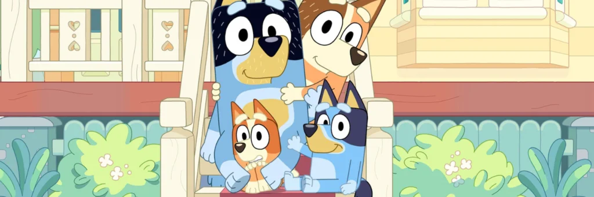
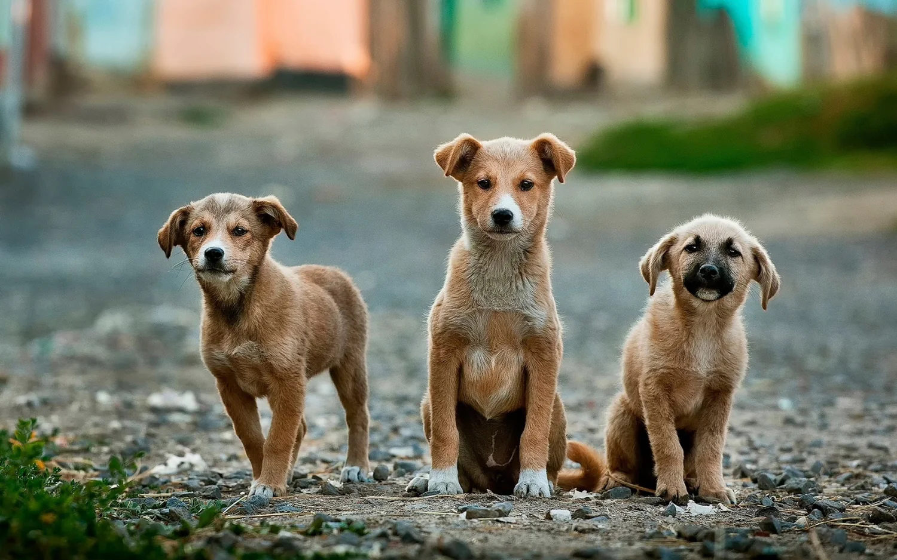

El Comienzo de la empresa:

En un vecindario donde los ladridos y maullidos se mezclaban en una sinfonía callejera, nació la idea de una empresa muy especial: “La Casita de Bluey”. Esta empresa tenía un objetivo noble y sencillo: rescatar y rehabilitar a perros y gatos abandonados, enfermos o maltratados, y encontrarles hogares amorosos.
Todo comenzó cuando Josune, una joven amante de los animales, encontró a un cachorro de aspecto desamparado en un callejón cerca de su casa. Decidió llevarlo a su hogar y cuidarlo, pero pronto se dio cuenta de que el problema era mucho más grande de lo que pensaba. Había decenas de perros y gatos en la misma situación en su vecindario, y sabía que no podía ayudarlos a todos por sí misma.
Formando La Casita de Bluey
Decidida a hacer una diferencia, Josune habló con su mejor amigo Carlos porque sabía que él también tenía un amor por los animales. Juntos, formaron "La Casita de Bluey". Por ese tiempo solo era una actividad que realizaban solo ellos para un bien mínimo, es decir que solo era una pequeña caridad sin ayuda de nadie más y sin beneficio para ellos dos. Comenzaron con poco más que voluntad y determinación, pero rápidamente se convirtieron en un rayo de esperanza para los animales necesitados de la zona. Con tan solos semanas de realizar estas caridades más amigos que se enteraron de esta buena obra de Josune y Carlos, decidieron unirse y así obtener más resultados en el proyecto.
Fue entonces cuando Josune y Carlos decidieron ir más a fondo.
Fundación Oficial
El día 14 de enero del año 2019 se fundó, El refugio de perros y gatos llamada: “La Casita de Bluey”. La empresa se organizó de manera meticulosa, tenían un equipo de rescatistas que patrullaban las calles en busca de animales en problemas. Una vez que encontraban a un perro o gato necesitado, lo llevaban a su pequeño refugio, donde recibía atención veterinaria, comida y cariño.
Concienciación y Educación
.jpg)
Pero "La Casita de Bluey" no se detenía ahí. También se dedicaban a concienciar a la comunidad sobre la importancia de la adopción de mascotas y la esterilización para controlar la población animal. Organizaban eventos de adopción y colaboraban con escuelas locales para educar a los niños sobre el cuidado responsable de los animales.
Crecimiento y Expansión

Con el tiempo, la empresa creció y pudo ampliar sus operaciones. Construyeron un refugio más grande y establecieron programas de voluntariado y de apoyo a familias de bajos recursos para que pudieran cuidar adecuadamente a sus mascotas.
Cada día, "La Casita de Bluey" demostraba que el amor y la compasión podían cambiar vidas, tanto de los animales como de las personas. Y aunque el camino estaba lleno de desafíos, seguían adelante con la convicción de que cada perro y gato merecía una segunda oportunidad.